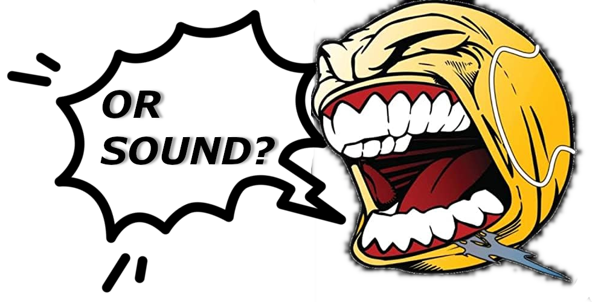

Welcome to my website! My name is Gentry Stayton. I like creating digital media!
What the heck does that even mean?
Well me·di·a [/ˈmēdēə/] is the plural form of medium - "a means by which something is communicated or expressed." [1] How do you express yourself?
I am a digital multimedia artist. I like creating all of these things, and more!
This website has been designed in HTML5, CSS, and basic JavaScript. I am also constantly learning new web frameworks and languages to add to my toolkit! Currently working on Python, Docker, and React.
Wanna create with me? Visit the contact page, or check out some of my works.
If you really want to play the scavenger hunt, previously the landing page which has now been relocated, be my guest.